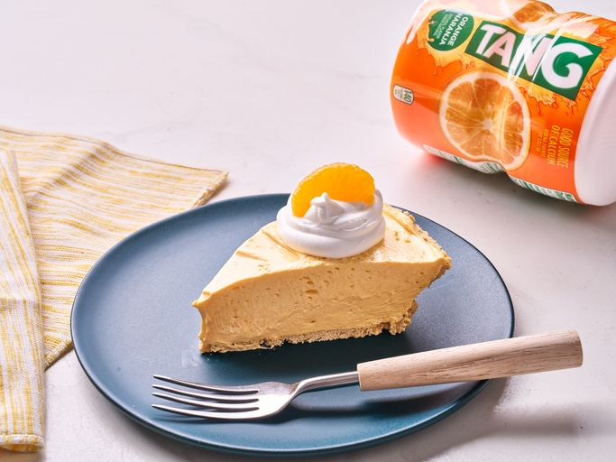

Home
Tang Pie

Description
This tang pie is perfect for summer gatherings and only takes minutes to put together.
Ingredients
- 1/2 cup orange-flavored drink mix (e.g. Tang)
- 1 can sweetened condensed milk
- 1 package cream cheese, softened
- 1 prepared graham cracker crust
- 1 container frozen whipped topping, thawed, divided
- 8 mandarin orange segments for garnish
Steps
- Combine orange drink mix, condensed milk, and cream cheese in a large bowl. Beat with an electric mixer on high speed until well combined. Fold 2 cups whipped topping into cream cheese mixture.
- Pour mixture into graham cracker crust and chill until firm, at least 1 hour. Garnish with remaining whipped topping and mandarin orange segments.